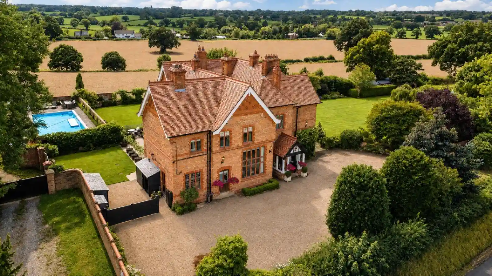
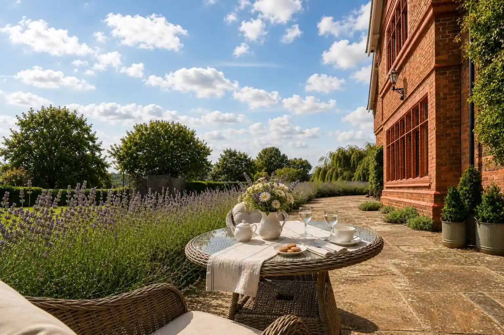
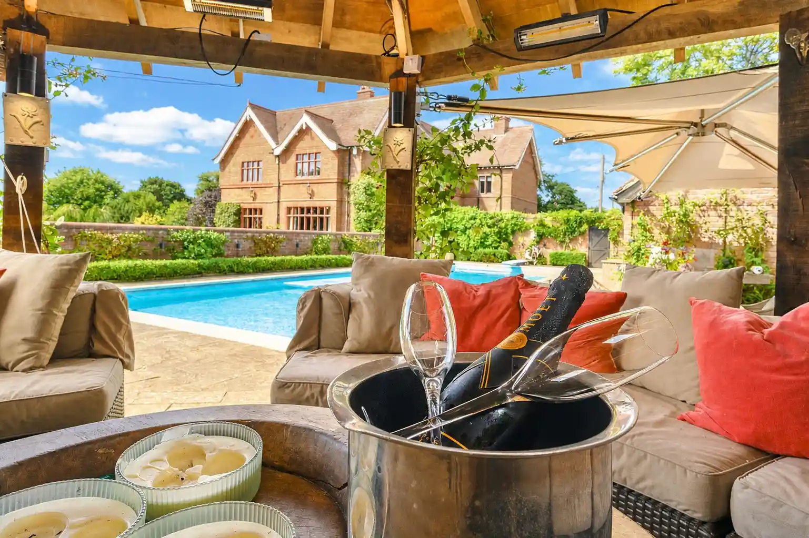
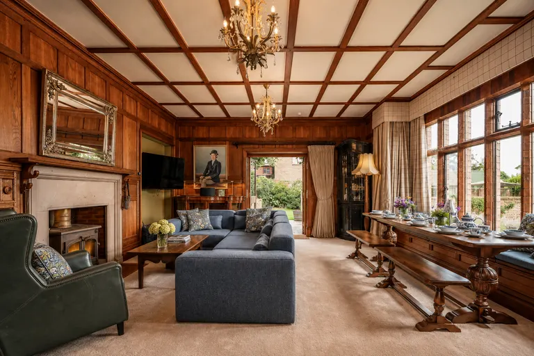
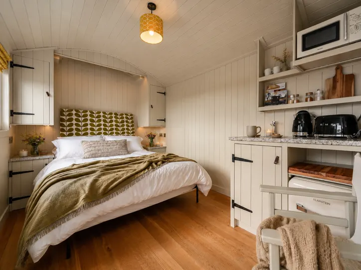
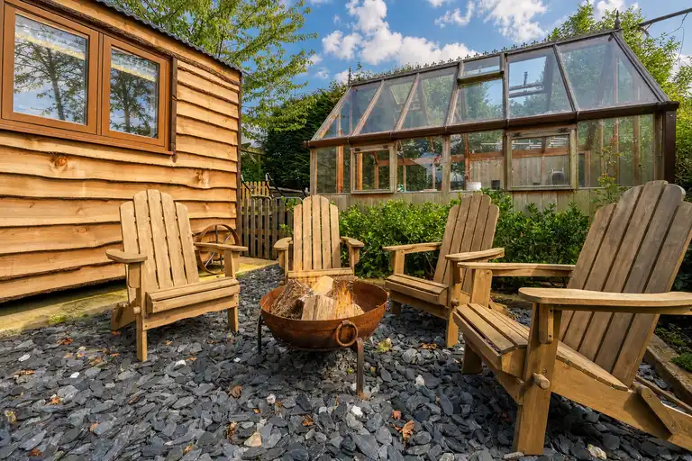
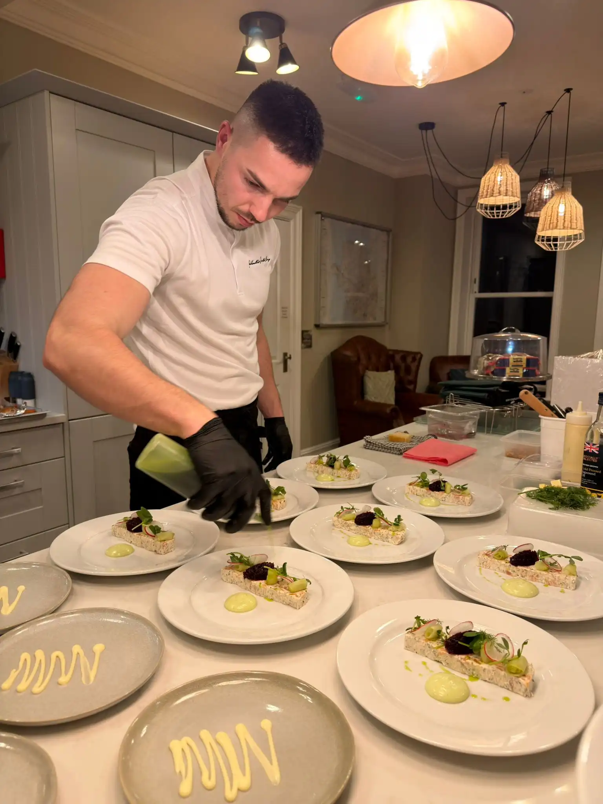

Luxury Stays
at The Old Rectory
Curated country accommodation
for a luxury escape.
The Old Rectory
The Old Rectory is a place to slow down, gather people together, and enjoy time away from the demands of everyday life. Whether it’s a family break, a big celebration, or a few days of rest and peace, it offers a setting that feels both special and relaxed.
Set within a beautifully restored 1886 Arts & Crafts property, the house has been carefully designed to balance character with comfort. Original features sit alongside modern touches, creating a space that feels considered without being formal.



 Verified Guest Review on Airbnb
Source: Airbnb
Verified Guest Review on Airbnb
Source: Airbnb
Was it a dream?!?! All our 17 guests agreed this place was unreal and said the pictures don’t do it justice, it’s even better than the listing! The house was spotless, full of character & warmth. HUGE, so no compromise on space or quality interiors. It had all the mod cons plus all the essentials you’d expect from a 5 star stay! Louise’s team went above and beyond — so communicative & simply the best. A magical weekend, we’re already planning our return stay (and maybe a Christmas one too!). Cannot recommend this beautiful home more highly! Thank you so much! Xx

Guest Experiences
From special celebrations to peaceful getaways, our guests love the memories they make at The Old Rectory — and we love welcoming them back.



Inside The Old Rectory
Inside, six individually designed ensuite bedrooms each offer privacy and comfort. Two well-equipped kitchens make group stays easy, whether you’re catering for a celebration dinner or enjoying lazy breakfasts together. The large communal areas are designed for coming together, with the added comfort of wood burners that make the space cosy, while still allowing plenty of room to spread out and unwind. A games room includes a pool table and a selection of board games, along with a range of creative activities to keep younger guests entertained.


.webp)


Hallways and Dining Spaces
A closer look at the hallways and dining areas inside The Old Rectory, showing the shared spaces guests move through and use for group meals during their stay.

Step Outside
Into the grounds of The Old Rectory


Outside The Old Rectory
Outside, the grounds are designed for enjoyment throughout the seasons.
A 17m heated pool sits at the heart of the outdoor space, complemented by a hot tub.
An outdoor bar and multiple seating areas create a natural setting for long evenings, casual drinks, and time spent outdoors without needing to go anywhere.
A BBQ, pizza oven, table tennis, outdoor lawn games and a trampoline are all available for guests to use, along with plentiful on-site parking.
The property is also dog friendly, with an underfloor-heated indoor/outdoor dog run and a fully fenced garden.
Shepherd Huts
Tucked within the private grounds of The Old Rectory, the shepherd huts add another characterful accommodation feature to the property. They sit naturally within the wider countryside setting, giving guests a cosy and memorable place to unwind while still being part of the Old Rectory experience.
Designed for relaxed stays, they offer a charming retreat for guests who want the feel of a peaceful hideaway alongside the shared spaces, gardens and outdoor features of the main property.




Elevate Your Stay
To make your stay even more seamless, we can arrange a range of thoughtful services tailored to your needs, including catering, housekeeping, babysitting, and massage or beauty treatments. From simple pre-prepared meals delivered ready for the Aga to fully catered five-course dining experiences in the house, every detail can be arranged so your stay feels as relaxed or as elevated as you choose.
- Catering
- Housekeeping
- Babysitting
- Massage & Beauty


Interested in staying?
Booking direct with Holt is the cheapest way to stay and our preferred option — just email us and we’ll take care of everything. Prefer to book through Airbnb? That option is available too.
EMAIL US TO BOOK DIRECT VIEW ON AIRBNB